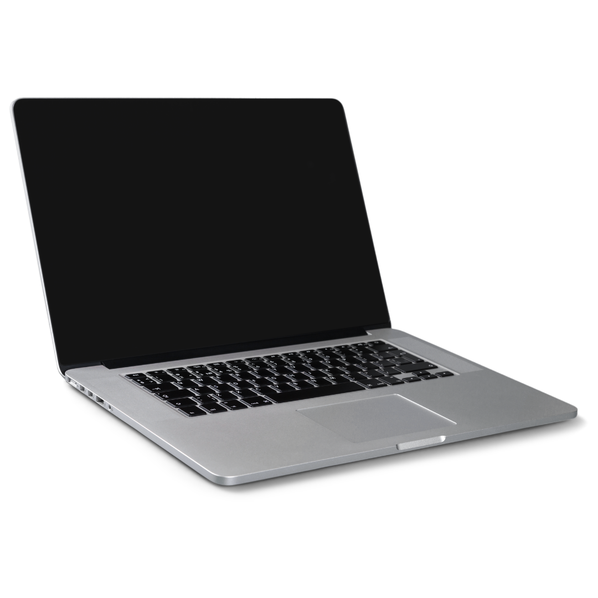
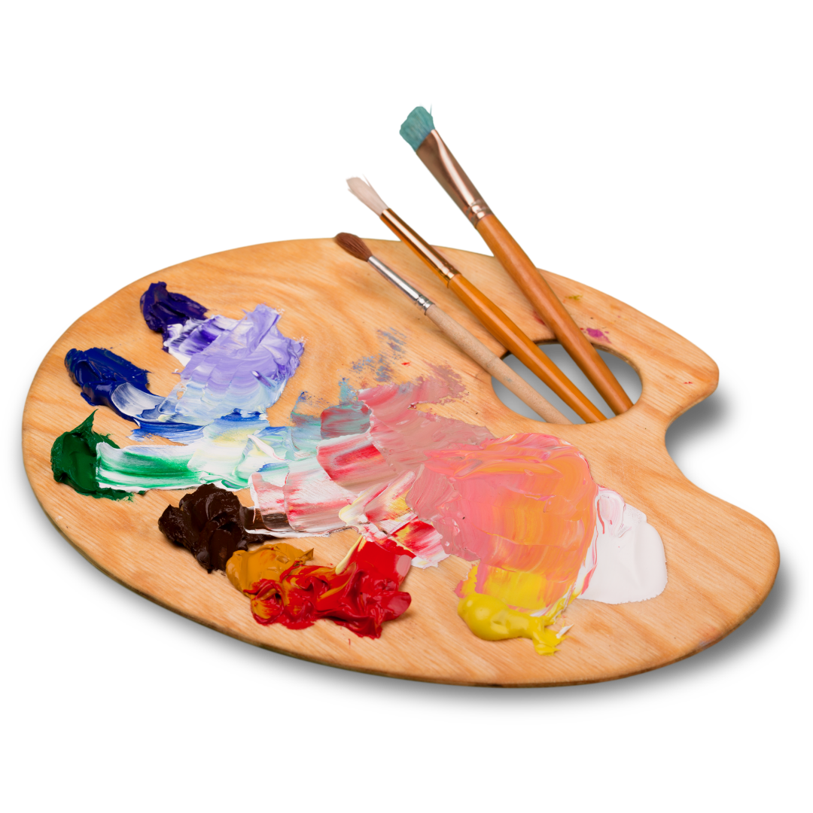
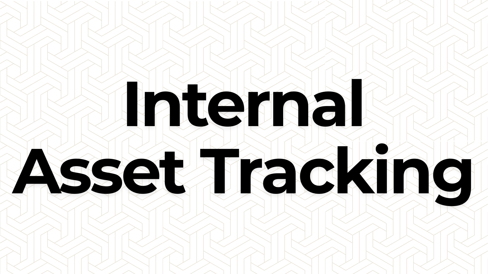
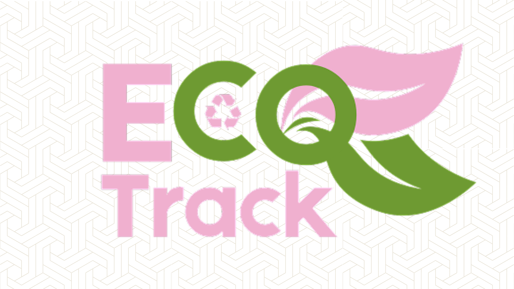
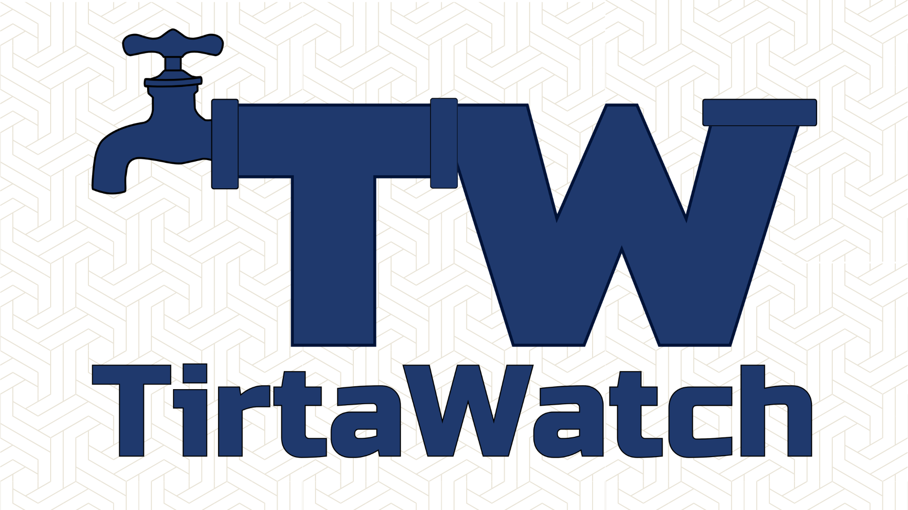
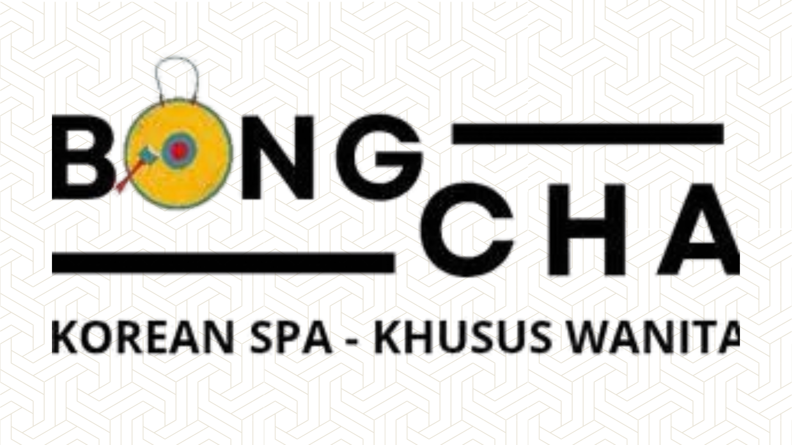

Tools
- Figma
- HTML, CSS, JavaScript
- Git dan GitHub
- Canva dan Capcut

Hubungi AkuBiar makin ngena, bacanya sambil nonton music videonya ya. Gabung Spotify Premium biar maksimal dengerinnya.
Scroll ke Project-kuAku adalah mahasiswa semester 7 program studi Teknik Informatika dari Universitas Pancasila yang saat ini sedang mengikuti program CAMP divisi Web Development dan UI/UX. Di tugas kali ini, aku membuat portfolio untuk menunjukkan kemampuan dan proyek yang telah aku kerjakan. Saya menyadari bahwa saya belum sempurna dalam beberapa aspek, tetapi saya terus belajar dan berusaha meningkatkan diri.
Ayo Ngobrol


Merupakan sistem informasi back-office dengan fokus bisnis sebagai pemantau lokasi dan kondisi aset perusahaan secara terkini.
Peran: Project Manager dan Full Stack Developer

Merupakan sistem informasi yang menghubungkan rumah tangga, pengepul rongsok, dan perusahaan untuk jual-beli barang bekas dengan mudah.
Peran: Pemikir Konsep dan UI/UX Designer

Merupakan platform pelaporan masalah air bersih dan sanitasi yang menjembatani masyarakat dengan penyedia layanan (seperti PDAM dan Dinas Lingkungan Hidup).
Peran: UI/UX Designer dan Full Stack Developer
Merupakan program nyata saya yang terpublikasi secara publik, dan sampai saat ini masih dalam pengembangan (belum sempurna).
Peran: Full Stack Developer

Merupakan platform reservasi dan manajemen layanan spa metode guest checkout yang memudahkan pelanggan untuk memesan layanan spa dengan mudah.
Peran: UI/UX Designer dan Full Stack Developer